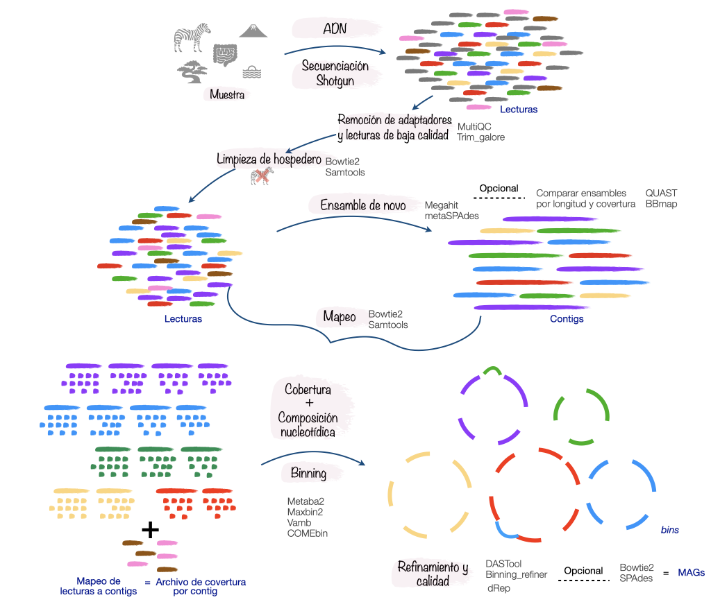
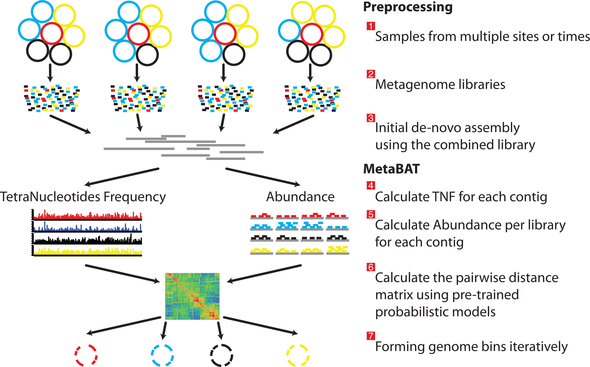
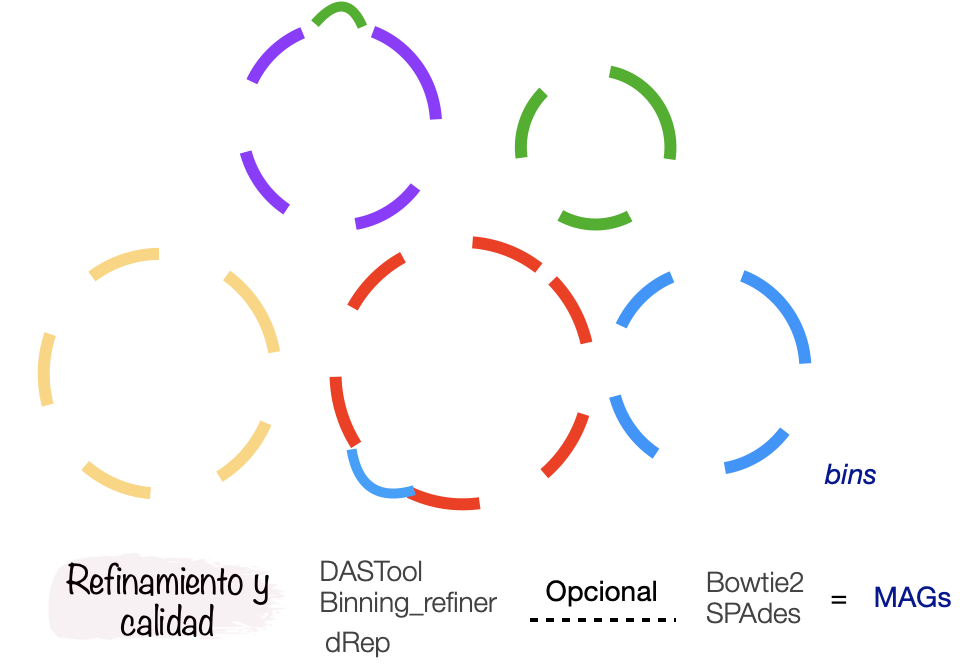
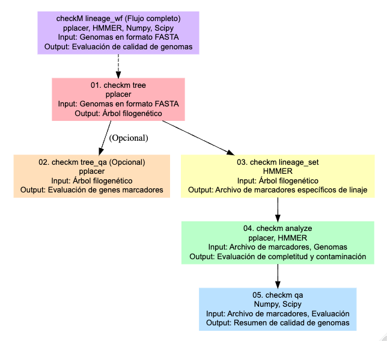
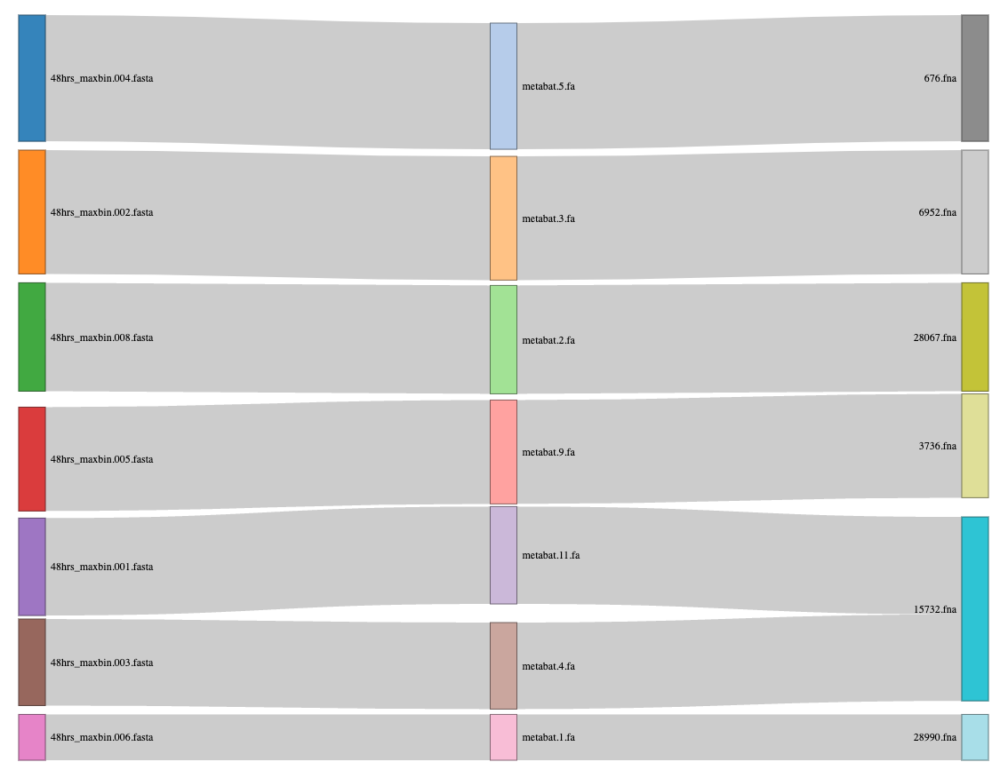
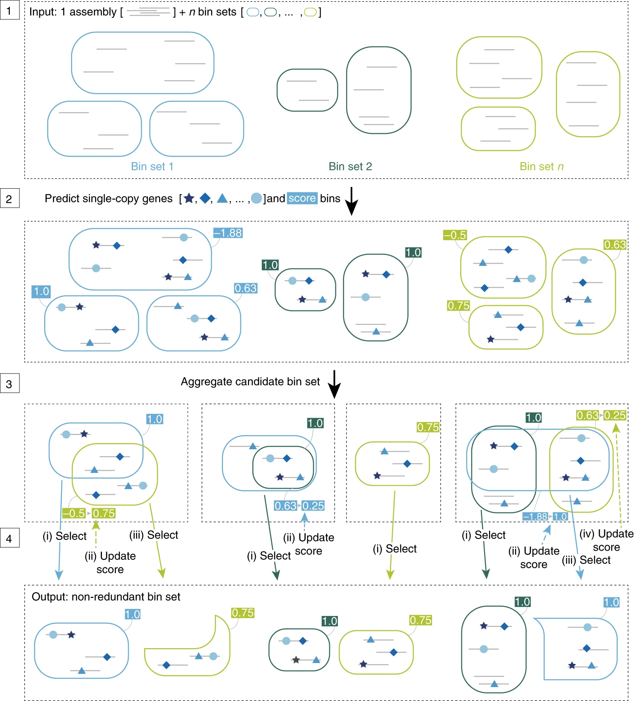
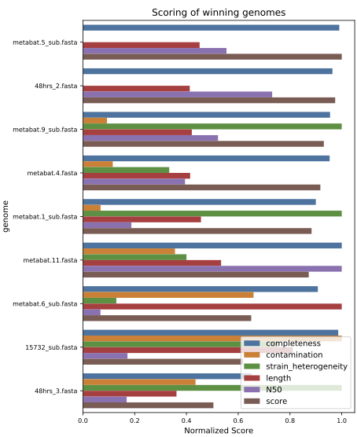

Genomas a partir de metagenomas MAGs
Un recordatorio
La metagenómica hace referencia al estudio de todo el ADN de los organismos que se encuentran en un ambiente. La secuenciación de este material genético produce lecturas que pueden ensamblarse para conocer la diversidad microbiana y sus funciones.
Típicamente los metagenomas pueden estudiarse mediante dos aproximaciones:
- La clasificación taxonómica de contigs o lecturas y la inferencia metabólica de los contigs.
- La reconstrucción de genomas a partir de metagenomas (MAGs), clasificación taxonómica y la inferencia metabólica de los MAGs.
En este taller nos enfocaremos en la segunda aproximación. Los MAGs se reconstruyen a partir de un ensamble metagenómico, los contigs de dicho ensamble se agrupan mediante la información de cobertura y frecuencia de tetranucleótidos. Esta agrupación puede generar errores, por lo que es indispensable evaluar la calidad de los MAGs mediante la completitud y redundancia de genes de copia única (MerenLab y col.)
Para obtener MAGs podemos seguir el siguiente flujo de análisis:

Antes de comenzar, reúnete con tu equipo y juntos
Revisen nuevamente el contenido de los directorios
EnsamblesyProfundidad¿Cuentan con la información necesaria para realizar el binning?
Tiempo: 5 min
01. Binning
Ahora si, vamos a agrupar los contigs en bins …
01.1 Metabat2
Metabat2 es una herramienta que agrupa los contigs tomando la cobertura de cada contig y calcula su composición nucleotídica.
Para correr metabat necesitamos activar el ambiente conda donde se aloja.

Ejecutemos Metabat2, pero antes vamos a crear el directorio de resultados:
mkdir -p results/06.metabat/09hrsY ahora vamos a correrlo
metabat2 -i results/03.ensambles/09h/v2_megahit.fasta \
-a results/05.profundidad/09hrs/09hrs_depth.txt \
-o results/06.metabat/09hrs/metabat -m 1500 -t 6 --seed 123Estamos utilizando la opción -m 1500 para efectos del curso y el tipo de datos que tenemos, sin embargo, esta opción podría estar demasiado laxa, hay estudios que han demostrado que el uso de contigs de longitud menor a 2000 pb puede producir malas agrupaciones de genomas (MAGs) .
¿Cuántos bins se formaron?
lsless
01.2 MaxBin2
MaxBin2 agrupa los contigs de acuerdo a la información de cobertura, composición nucleotídica, contenido de GC y genes marcadores de copia única.
Vamos a ejecutarlo, activemos el ambiente conda donde se encuentra maxbin.
conda activate maxbin2Ahora si, vamos a ejecutarlo, pero primero creamos el lugar donde se alojaran los resultados
mkdir -p results/07.maxbin/09hrsrun_MaxBin.pl -thread 4 -min_contig_length 1500 \
-contig results/03.ensambles/09h/v2_megahit.fasta \
-abund results/05.profundidad/09hrs/09hrs_depth.txt \
-out results/07.maxbin/09hrs/09hrsResponde
1. ¿Cuántos bins se formaron?
2. ¿Qué porcentaje de completitud tienen??
ls + wc -llesscat archivo | column -t
conda deactivateVamb
VAMB utiliza una combinación de enfoques de aprendizaje profundo y técnicas de agrupamiento basándose en sus patrones de composición de nucleótidos y en la co-ocurrencia de sus frecuencias de cobertura.
conda activate vambA vamb le gusta crear un directorio parental, pero no le gusta crear los directorios superiores, así que debemos crear el directorio que lo contendrá :/
mkdir -p results/08.vambCorramos vamb:
vamb bin default --fasta results/03.ensambles/09h/v2_megahit.fasta \
--bamfiles results/05.profundidad/09hrs/09hrs.sorted.bam \
--outdir results/08.vamb/09hrsls \
-p 6 -m 1500 --seed 123 --minfasta 200000Si quisieras recuperar los genomas de virus ¿Qué cambiarías?
Recientemente se publicó COMEBin, que utiliza un enfoque distinto a lo que hemos usado en este tutorial. En el siguiente link encontrarás el manual y una explicación general sobre su funcionamiento.
conda deactivateRefinamiento
Ya corrimos tres programas de binning, pero, recordemos que los agrupamientos pueden tener errores:

Para disminuir la contaminación e incrementar la completitud hay algunos programas que pueden ayudarnos. Entre ellos están Binning_refiner y DASTool.
CheckM
Antes de proceder al refinamiento es necesario tener claro cómo se evalúa la completitud y contaminación de los bins. Para esta evaluación se usa CheckM que se ha convertido en una herramienta estándar para la evaluación de la calidad de genomas y MAGs, y es usada por la mayoría de programas de refinamiento.
Para hacer esta evaluación, CheckM utiliza una serie de herramientas: tree organiza los genomas en un árbol de referencia. tree_qa evalúa la cantidad de genes marcadores filogenéticos y su ubicación en el árbol. El comando lineage_set crea un archivo de marcadores específicos de linaje, que se usa en el comando analyze para evaluar la integridad y contaminación de los genomas. Finalmente, el comando qa genera tablas que resumen la calidad de los genomas.

En este taller no vamos a correr CheckM para los resultados de cada binneador porque uno de los programas de refinamiento que usaremos ya lo corren de forma interna, sin embargo, es útil correrlo y recomendamos hacerlo en la vida real para tener una idea clara sobre la calidad de los bins que vamos obteniendo.
Vamos a correrlo sólo como ejemplo para los resultados de Vamb para que podamos conocerlo.
Activamos el ambiente:
conda activate checkmnano src/06.1.checkm_48h.slurm#!/bin/bash
#SBATHC -J checkm
#SBATCH -t 0
#SBATCH -e outs/06.1.checkm.err
#SBATCH -o outs/06.1.checkm.out
#SBATCH --export=ALL
#SBATCH -n 6
#SBATCH -N 1
#SBATCH -p q2
#SBATCH --mem 64G
# Ejemplo de como correrlo con los bins de vamb
# 01. Indicamos la ubicación de la base de datos
export CHECKM_DATA_PATH=/lustre/databases/metagenomica/checkM/
# 02. Ejecutamos checkm
checkm lineage_wf results/06.vamb/48h/bins/ results/06.vamb/48h/checkm -x fna -t 6 -f results/06.vamb/48h/checkm_vamb.tsvY ahora si, a refinar los bins … 🥳
Binning_refiner
Binning_refiner se enfoca en refinar y fusionar los bins para mejorar la integridad y reducir la contaminación. Identifica bins que pueden representar el mismo genoma y los fusiona. Después elimina posibles contaminaciones, durante el proceso, Binning_refiner evalúa la calidad de los bins.
https://doi.org/10.1093/bioinformatics/btx086
Necesitamos crear el directorio de resultados para binning_refiner y un directorio con los bins generados por cada programa
mkdir -p results/07.binning_refiner/48hbins/{metabat,maxbin,vamb}Ejercicio. Crea ligas simbólicas de los bins generados por cada herramienta en el directorio que corresponde.
Crea ligas simbólicas de los bins generados por cada herramienta en el directorio que corresponde de acuerdo a los directorios que acabamos de crear.
#metabat
cd results/07.binning_refiner/48hbins/metabat/
ln -s ../../../04.metabat/48h/*.fa .
#maxbin
cd ../maxbin/
ln -s ../../../05.maxbin/48h/*.fasta .
#vamb
cd ../vamb/
ln -s ../../../06.vamb/48h/bins/*.fna .
Regresa al directorio de resultados de Binning_refiner para ejecutar el programa dentro de ese directorio.
# usa pwd y cd para ubicarteActiva el ambiente
conda activate mt-das-toolAhora si, corramos Binning_refiner
srun --mem 1G -n1 -p q2 Binning_refiner -i 48hbins/ -m 200 -p 48hY regresemos a nuestro directorio principal
taller_metagenomica_pozol/Exploremos los resultados!
cat results/07.binning_refiner/48h_Binning_refiner_outputs/48h_sources_and_length.txtCopia y pega este contenido en la consola de Rscript
# Cargar las librerias
library(dplyr)
library(networkD3)
# revisa tu ubicación
getwd()
# OJO
setwd("/home/ELALUMNOQUEERES/taller_metagenomica_pozol")
# Cargar los datos
sankey_data <- read.csv("results/07.binning_refiner/48hrs_Binning_refiner_outputs/48hrs_sankey.csv")
# Crear una lista de nodos únicos
nodes <- data.frame(name = unique(c(sankey_data$C1, sankey_data$C2)))
# Crear el dataframe de enlaces
links <- sankey_data %>%
mutate(source = match(C1, nodes$name) - 1,
target = match(C2, nodes$name) - 1,
value = Length_Kbp) %>%
select(source, target, value)
# Crear el gráfico Sankey
sankey_plot <- sankeyNetwork(Links = links, Nodes = nodes,
Source = "source", Target = "target",
Value = "value", NodeID = "name",
fontSize = 12, nodeWidth = 30)
# Mostrar el gráfico
sankey_plot
# Guardar
library(htmlwidgets)
saveWidget(sankey_plot, file = "48hrs_sankey_plot.html")
DASTool
DASTool es una herramienta utilizada para mejorar la calidad de los bins. Evalúa la integridad, combina los resultados de diferentes bineadores y por consenso selecciona los mejores bins de cada herramienta. Una vez que DASTool ha seleccionado los mejores bins, realiza un proceso de refinamiento para optimizar los resultados.

Vamos a correr DASTool … 🥳
nano src/08.dastool_48h.slurm#!/bin/bash
#SBATHC -J dastool
#SBATCH -t 0
#SBATCH -e outs/08.dastool48h.err
#SBATCH -o outs/08.dastool48h.out
#SBATCH --export=ALL
#SBATCH -n 6
#SBATCH -N 1
#SBATCH -p q2
#SBATCH --mem 16G
export LC_ALL=en_US.UTF-8
# 01. Crear el directorio para los resultados
mkdir -p results/08.dastool/48h/
# 02. DASTool necesita como entrada un archivo tabular con información de los resultados de cada programa de binning.
Fasta_to_Contig2Bin.sh -i results/04.metabat/48h/ -e fa > results/08.dastool/48h/48hrs_metabat.dastool.tsv
Fasta_to_Contig2Bin.sh -i results/05.maxbin/48h/ -e fasta > results/08.dastool/48h/48hrs_maxbin.dastool.tsv
Fasta_to_Contig2Bin.sh -i results/06.vamb/48h/bins/ -e fna > results/08.dastool/48h/48hrs_vamb.dastool.tsv
# 03. Ya que tenemos los archivos tsv podemos empezar con el refinamiento!!
DAS_Tool -i results/08.dastool/48h/48hrs_metabat.dastool.tsv,results/08.dastool/48h/48hrs_maxbin.dastool.tsv,results/08.dastool/48h/48hrs_vamb.dastool.tsv -l metabat,maxbin,vamb -c results/02.ensambles/48hrs.fasta -o results/08.dastool/48h/48h -t 6 --write_binsDesreplicación
dRep
La desreplicación es el proceso de identificar conjuntos de genomas que son “iguales” en una lista de genomas y eliminar todos los genomas excepto el “mejor” de cada conjunto redundante. dRep es una herramienta útil para esto.
Ya que tenemos los resultados de los dos refinadores ejecutaremos dRep para desreplicar y seleccionar el mejor representante de cada bin.
Primero vamos a crear el directorio de resultados para dRep.
mkdir -p results/09.drep/48h/binsCopia los bins que queremos comparar dentro del directorio que acabamos de crear. En este caso los generados por ambos refinadores.
Con las siguientes lineas podemos copiar los bins:
DASTOOL="results/08.dastool/48h/48h_DASTool_bins"
BR_BINS="results/07.binning_refiner/48h_Binning_refiner_outputs/48h_refined_bins"
DREP_BINS="results/09.drep/48h/bins"
for i in $(ls $DASTOOL/*.fa); do
name=$(basename $i .fa)
cp $i $DREP_BINS/$name".fasta"
done
cp $BR_BINS/*.fasta $DREP_BINSY ahora si, vamos a correr dRep …
nano src/09.drep_48h.slurm#!/bin/bash
#SBATHC -J drep
#SBATCH -t 0
#SBATCH -e outs/09.drep48h.err
#SBATCH -o outs/09.drep48h.out
#SBATCH --export=ALL
#SBATCH -n 10
#SBATCH -N 1
#SBATCH -p q2
#SBATCH --mem 160G
export LC_ALL=en_US.UTF-8
export CHECKM_DATA_PATH=/lustre/apps/spack/opt/spack/linux-centos8-ivybridge/gcc-8.3.1/miniconda3-4.7.12.1-ubp7tlghaseisza4pqufq6sbehwa4pog/envs/mt-das-tool/db
dRep dereplicate results/09.drep/48h/ --debug -p 10 -comp 50 -con 10 -g results/09.drep/48h/bins/*.fastaEste es uno de los plots generados por dRep, que representa los mejores bins desreplicados.

Vamos a desactivar el ambiente de dRep
conda deactivateEn la vida real, si el proyecto de metagenómica que estás desarrollando tiene librerías de diferentes muestras usarías dRep entre todos los conjuntos de bins ya refinados para no tener redundancia de genomas.
Qué harías si antes de desreplicar tienes un bin que tiene 98 % de completitud y 11 % de contaminación?. dRep en automático lo descartaría.
Propondrías alguna manera para quedarte con este bin y curarlo para reducir su contaminación?
Por suerte hay más programas que pueden ayudarnos a curar nuestros bins manualmente, una herramienta útil para esto es mmgenome2
Ya que tenemos los bins refinados y desreplicados opcionalmente podrías reensamblarlos. La manera sería mapear las lecturas de toda la muestra a los bins finales y con las lecturas mapeadas y el bin, generar un ensamble genómico para cada uno. Con esta aproximación se genera un MAG más pulido y la contaminación se reduce.
Aunque en muchos reportes verás que los autores reensamblan sus MAGs, en otros no lo hacen y no hacerlo no está mal, pero hacerlo mejora la calidad.
Ahora te toca a tí
Ahora te toca a tí.
Reúnanse en equipos y repliquen todo el flujo hasta este punto con la muestra que les toca.
Discutan cada resultado obtenido.
En la carpeta compartida de Drive busquen la presentación para el Ejercicio 2, en la diapositiva correspondiente resuman sus resultados obtenidos para que los presenten.
Tiempo de actividad (1.5 hr)
Tiempo de presentación de resultados (5 min por equipo)